Для обработки информации с помощью ПК пользователь должен ввести информацию в компьютер. Основными устройствами ввода данных и управления системой являются клавиатура, мышь, джойстик. Однако все большее распространение получают такие устройства ввода информации, как сканер, цифровая камера, дигитайзер.
Клавиатура (Keyboard) является основным устройством ввода информации в ПК, хотя мышь все больше берет на себя выполнение функций управления.
Принцип действия клавиатуры представлен на рис. 6.1. Основным элементом клавиатуры являются клавиши. Сигнал при нажатии клавиши регистрируется контроллером клавиатуры и передается в виде так называемого скэн-кода на материнскую плату. Скэн-код — это однобайтовое число, младшие 7 бит которого представляют идентификационный номер, присвоенный каждой клавише. На материнской плате ПК для подключения клавиатуры также используется специальный контроллер. 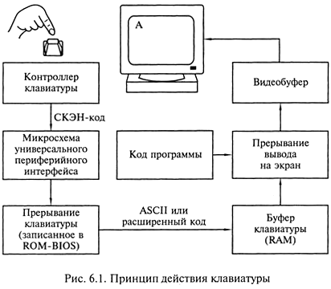
Когда скэн-код поступает в контроллер клавиатуры, инициализируется аппаратное прерывание, процессор прекращает свою работу и выполняет процедуру, анализирующую скэн-код. Скэн-код трансформируется в код символа (так называемые коды ASCII). При этом обрабатывающая процедура сначала определяет установку клавишей и переключателей, чтобы правильно получить вводимый код (например, «ф» или «Ф»). Затем введенный код помещается в буфер клавиатуры, представляющий собой область памяти, способную запомнить до 15 вводимых символов. Контроллер клавиатуры выполняет функции самоконтроля в процессе загрузки системы. Процесс самоконтроля при загрузке отображается однократным миганием трех индикаторов клавиатуры.
По конструктивному исполнению клавиатуры подразделяются на клавиатуры с пластмассовыми штырями, со щелчком, с микропереключателями и сенсорные.
Клавиатуры с пластмассовыми штырями выполняются таким образом, что под каждой клавишей находится пластмассовый штырь, установленный вертикально, нижний конец которого выполнен в виде штемпеля (клейма), изготовленного из композиции резины с металлом. Ниже этого резинового штемпеля находится пластина с контактными площадками, неподвижно установленная на корпусе панели. При нажатии клавиши штемпель соприкасается с контактными площадками, замыкается электрическая цепь, что воспринимается контроллером клавиатуры. Недостатком такой клавиатуры является высокая чувствительность клавиши к вибрации при нажатии, что приводит к многократному отображению символа на экране при печати с высокой скоростью.
Клавиатура со щелчком выполнена так, что при нажатии клавиши ее механическое сопротивление становится тем больше, чем глубже она нажимается. Для преодоления этого сопротивления необходимо затратить определенную силу, после чего клавиша нажимается легко. Нажатие и отпускание клавиши сопровождается щелчком, отсюда и название. Клавиатуры со щелчком позволяют обеспечить уверенность в том, что клавиша нажата, а это повышает скорость ввода информации.
Клавиатуры с микропереключателями имеют характеристики, аналогичные клавиатурам со щелчком. Но микропереключатели, в том числе герконы (герметические контакты), характеризуются большей прочностью и длительным сроком службы.
Клавиатуры с герконами содержат переключатели клавишей с пружинными контактами из ферромагнитного материала, помещенными в герметизированный стеклянный баллон. Контакты приходят в соприкосновение (или размыкаются) под действием магнитного поля электромагнита, установленного снаружи баллона.
Принцип действия сенсорной клавиатуры основан на усилении разности потенциалов, приложенной к чувствительному элементу. Количество этих элементов соответствует количеству клавишей. В качестве чувствительных элементов используются токопроводящие контактные площадки в виде, например, одного или двух прямоугольников, разделенных небольшим зазором. В момент касания пальцем контактных площадок статический потенциал усиливается специальной схемой, на выходе которой формируется сигнал, аналогичный сигналу, возникающему при нажатии клавиши обычной механической клавиатуры. Сенсорные клавиатуры самые долговечные, поскольку в них отсутствуют какие-либо механические элементы и информация о нажатии «клавиши» формируется только электроникой.
Драйвер клавиатуры служит для отображения на экране набранного на клавиатуре и обычно является составной частью любой операционной системы. Драйвер клавиатуры операционной системы MS-DOS называется KEYB.COM. После установки операционной системы DOS он находится, как правило, в директории DOS. При установке операционной среды Windows 95/98 драйвер клавиатуры автоматически записывается в стартовом файле AUTOEXEC.BAT.
Со времени появления первого персонального компьютера вплоть до 1995 г. внешний вид и структура клавиатуры оставались неизменными. Но в 1995 г., после выхода операционной системы Wimdows 95, привычные 101-клавишные устройства были заменены клавиатурами со 104/105 клавишами. Клавиши были добавлены, чтобы реализовать некоторые возможности новой операционной системы.
Большинство современных клавиатур снабжено тремя специальными клавишами, предназначенными для работы в операционной системе Windows 95/98/МЕ;они расположены в нижней части клавиатуры, рядом с клавишами Ctrl и Alt.
Еще ряд изменений был связан с эргономическими показателями, т.е. с необходимостью соответствия новых клавиатур современным требованиям медицины. Было установлерю, что при ежедневной интенсивной работе со старыми плоскими клавиатурами у операторов ЭВМ развивается профессиональное заболевание кистей рук. Поэтому на рынке появилось множество новых «эргономических» клавиатур самых причудливых форм: как бы «разломанных» надвое, изогнутых, снабженных подставками для кистей рук. Все более популярными становятся клавиатуры на ИК-лучах, не требующие шнура для подключения к системному блоку. Передача сигналов с такой клавиатуры осуществляется по принципу, аналогичному «дистанционному управлению».
Наибольшим успехом на российском рынке пользуются клавиатуры таких производителей, как Microsoft, Cherry и ВТС.
Мышь, как и клавиатура, является важнейшим средством ввода информации. Особенно возросла ее роль с появлением графических оболочек, поскольку мышь стала необходимой для эффективной работы на ПК с соответствующим программным обеспечением.
Важное преимущество графических оболочек — возможность инициализации многих команд без длительного ввода их с клавиатуры. Управление с помощью несложных процедур: выбор, щелчок (или двойной щелчок) на объекте в виде пиктограммы, символа или пункта меню — зачастую позволяет обходиться без использования клавиатуры.
Мышь как датчик перемещения была изобретена в 1968 г. Дугласом Энгельбартом. Но неотъемлемой составляющей компьютера Apple Macintosh она стала в конце 1970-х гг., поскольку именно этот компьютер был укомплектован полноцветным графическим интерфейсом, где пользователь отдавал команды, щелкая мышью по значкам-пиктограммам. Поскольку ПК получил такой интерфейс позже, мышь в составе ПК появилась только в середине 1980-х гг.
По принципу действия мыши подразделяются на оптико-механические и оптические.
Оптико-механическая мышь состоит из следующих основных элементов. В нижней плоскости корпуса мыши находится отверстие, которое открывается поворотом пластмассовой шайбы. Под шайбой находится шарик диаметром 1,5 — 2 см, изготовленный из металла с резиновым покрытием (рис. 6.2). 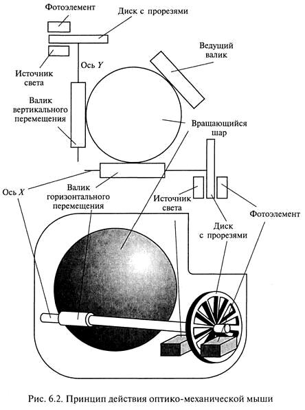В непосредственном контакте с шариком находятся валики. Причем только один из валиков служит для управления шариком, а два других валика регистрируют механические передвижения мыши. При перемещении мыши по коврику шарик приходит в движение и вращает соприкасающиеся с ним валики. Оси вращения валиков взаимно-перпендикулярны. На этих осях установлены диски с прорезями, которые вращаются между двумя пластмассовыми цоколями. На одном цоколе находится источник света, а на другом — фоточувствительный элемент (фотодиод, фоторезистор или фототранзистор). С помощью такого фотодатчика растрового типа точно определяется относительное перемещение мыши. С помощью двух растровых датчиков определяется направление перемещения мыши (по последовательности освещения фоточувствительных элементов) и скорость перемещения в зависимости от частоты импульсов. Импульсы с выхода фоточувствительных элементов при помощи микроконтроллера преобразуются в совместимые с ПК данные и передаются на материнскую плату.
Оптическая мышь функционирует аналогично оптико-механической мыши, отличаясь тем, что ее перемещение регистрируется оптическим датчиком. Такой способ регистрации перемещения заключается в том, что оптическая мышь посылает луч на специальный коврик. Отраженный от коврика луч поступает на оптоэлектронное устройство, расположенное в корпусе мыши. Направление движения мыши определяется типом полученного сигнала. Преимуществами оптической мыши являются высокая точность определения позиционирования и надежность.
По принципу подключения к компьютеру мыши можно подразделить на проводные, связанные с компьютером электрическим кабелем («хвостатые» мыши), и бесконтактные (беспроводные, «бесхвостые»). Беспроводные мыши — это инфракрасные или радиомыши.
Инфракрасная мышь функционирует аналогично пульту дистанционного управления телевизора. Для этого рядом с компьютером или на самом компьютере устанавливается приемник инфракрасного излучения, который кабелем соединен с ПК. Движение мыши регистрируется рассмотренными выше механизмами и преобразуется в инфракрасный сигнал, который затем передается на приемник. Преимущество использования инфракрасной мыши заключается в отсутствии дополнительного кабеля на рабочем столе. Однако для передачи инфракрасного сигнала пространство между передатчиком мыши и приемником компьютера не должно перекрываться, иначе мышь будет не в состоянии передать сигнал на ПК. Инфракрасные мыши работают от аккумулятора или обычной батарейки.
Радиомышь обеспечивает передачу информации от мыши с помощью радиосигнала. При этом нет необходимости в свободном пространстве между приемником и передатчиком. Радиомышь передает данные с помощью радиоволн на небольшой приемник, который подключен к разъему COM или PS/2. Расстояние от приемника до мыши может составлять до 1,5 м. Питание радиомыши осуществляется от батареек в ее корпусе.
Для нормального функционирования мыши необходимо обеспечить ее свободное перемещение по плоской поверхности, в качестве которой обычно применяются специальные коврики (Mouse Pad). Однако выпускаются мыши, свободно работающие на любой поверхности. Устройствами ввода сигнала мыши являются кнопки, расположенные на ней. В зависимости от модели мыши на ней имеется от двух до четырех кнопок.
Функциональное назначение кнопок мыши различно и зависит от выполняемого приложения. Помимо кнопок многие мыши оборудованы специальными устройствами для быстрой прокрутки (скроллинга) окон. Наиболее удобным и простым является скроллинг с помощью колес, которым обеспечиваются отдельные модели.
Мыши подразделяются по способу подключения к ПК: подключаемые к COM-порту (Serial Mouse — последовательные мыши), подключаемые к PS/2 (PS/2-мыши) и мыши, подключаемые к порту USB. Комбинированные мыши можно подключать как к порту PS/2, так и к порту COM.
Наряду с эргономическими клавиатурами на компьютерном рынке появились эргономические, причудливо изогнутые мыши, форма которых призвана снизить нагрузку на кисть пользователя.
Основными производителями мышей являются компании Microsoft, Mitsumi, A4Tech, Logitech и KEY (торговая марка мышей Genius).
Для просмотра фильма "Как это работает: оптическая мышь (Discovery Chanel)" нажмите кнопку ВОСПРОИЗВЕДЕНИЕ.
Трэкбол (Trackball) по конструкции напоминает мышь, у которой шар расположен не внутри корпуса, а на верхней его части. Принцип действия и способ передачи данных трэкбола такой же, как у мыши. Обычно трэкбол использует оптико-механический принцип регистрации положения шарика. Большинство трэкболов управляются через последовательный порт, причем назначение выводов аналогично разъему мыши. Основные отличия трэкбола от мыши в том, что трэкбол обладает стабильностью за счет тяжелого корпуса и не требует специальной площадки для движения. Для пользователей ПК типа Notebook и Laptop имеются встроенные или подключаемые трэкболы.
Джойстик — незаменимое устройство ввода в области компьютерных игр.
Создавался джойстик для использования на специальных военных тренажерах и обычно имитировал устройство управления какой-либо военной техникой.
Цифровые джойстики, как правило, применяются в игровых приставках и в игровых компьютерах.
Любой джойстик состоит из двух элементов: координатной части — ручки или руля, перемещение которой меняет положение виртуального объекта в пространстве, и функциональных кнопок. Число кнопок может быть от трех до восьми, и большинству из них, кроме главной кнопки «Огонь» или гашетки, можно в зависимости от игры присваивать разные значения: смена оружия, коробка скоростей и т.д.
Для ПК в качестве устройства ввода (управления) в основном применяются аналоговые джойстики. Использование цифрового джойстика требует установки в компьютер специальной карты или применения переходника с одного разъема на другой. Аналоговый джойстик имеет существенное преимущество перед цифровым. Цифровой джойстик реагирует в основном на положение управляющей ручки (влево, вправо, вверх, вниз) и статус кнопки «огонь». Аналоговые джойстики регистрируют минимальные движения ручки управления, что обеспечивает более точное управление.
Новые модели дорогих джойстиков имеют своеобразную «обратную связь»: при использовании их для «стрельбы» ручка дает эффект «отдачи», какая бывает у настоящего оружия. Некоторые модели обладают ощутимым сопротивлением, имитирующим управление настоящим летательным аппаратом и позволяющим более точно регулировать перемещение виртуального объекта.
Лидерами рынка джойстиков в России являются фирмы Quick Schot и Genius.
Сканер (Scanner) — устройство ввода в ЭВМ информации в виде текстов, рисунков, слайдов, фотографий на плоских носителях, а также изображения объемных объектов небольших размеров. Сканер представляет собой периферийное устройство, основным элементом которого является фотодатчик, предназначенный для фиксирования количества отраженного света в каждой области оригинала.
Метод, на котором основаны современные сканеры, заключается в последовательном, точка за точкой, фиксировании изображения и преобразовании его в электрический сигнал. Этот метод использовался при передаче фотографических изображений по телеграфу еще в 1850 г. Первый черно-белый сканер был создан в 1863 г., а цветной — в 1937 г.
Сканирование представляет собой цифровое кодирование изображения, заключающееся в преобразовании аналогового сигнала яркости в цифровую форму. Такое получение цифрового изображения оригинала для ввода в компьютер называют оцифровкой (Digitizing). В процессе оцифровки изображение разбивается на элементарные частицы — пикселы, каждому из которых соответствует определенный код яркости и цветового оттенка.
Сканер как оптоэлектронный прибор включает следующие функциональные компоненты: датчик, содержащий источник света, оптическую систему, фотоприемник, механизм перемещения датчика (или оптической системы) относительно оригинала. Электронное устройство обеспечивает преобразование информации в цифровую форму.
В процессе сканирования оригинал освещается источником света. Светлые области оригинала отражают больше света, чем темные.
Отраженный (или преломленный) свет оптической системой направляется на фотоприемник, который преобразует интенсивность принимаемого света в соответствующее значение напряжения. Аналоговый сигнал преобразуется в цифровой для дальнейшей обработки с помощью ПК.
Сканеры весьма разнообразны, и их можно классифицировать по целому раду признаков. В основе классификации могут быть следующие признаки:
В современных сканерах применяют фотодатчики двух типов: фотоэлектронные умножители — ФЭУ (PMT — Photomulti Plier Tube) или приборы с зарядовой связью — ПЗС (CCO — Charge - Coupled Device).
Фотоэлектронный умножитель изобретен советским инженером Л.А. Кубецким в 1930 г. ФЭУ, изображенный на рис. 6.3,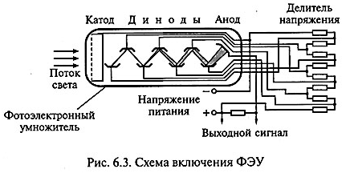 представляет электровакуумный прибор, внутри которого расположены электроды - катод, анод и диноды. Световой поток от объекта сканирования вызывает эмиссию электронов из катода. В соответствии с законом фотоэффекта фототок эмиссии прямо пропорционален интенсивности падающего на него светового потока. Вылетающие из катода электроны под действием разности потенциалов между катодом и ближайшим к нему электродом - динодом притягиваются к последнему и выбивают с его поверхности вторичные электроны, число которых многократно превышает первичный электронный поток с катода. Это обеспечивается благодаря тому, что диноды выполнены из материалов, имеющих высокий коэффициент вторичной эмиссии, а между ними приложены потенциалы, обеспечивающие усиление вторичной эмиссии. В результате через сопротивление нагрузки в анодной цепи ФЭУ протекает усиленный ток. Коэффициент усиления фототока в ФЭУ достигает 108. Такое усиление достигается за счет подачи на ФЭУ напряжения от высоковольтного источника (в зависимости от количества динодов - от 500 до 1500 В), причем потенциалы распределяются между электродами равномерно с помощью делителя напряжения. ФЭУ обладает высокой чувствительностью (1 А/лм), а его спектральный диапазон, определяемый областью длин волн регистрируемого излучения, соответствует задачам сканирования, поскольку перекрывает видимый спектр световых волн.
Прибор с зарядовой связью - это твердотельный электронный фотоприемник, состоящий из множества миниатюрных фоточувствительных элементов, которые формируют электрический заряд, пропорциональный интенсивности падающего на них света, и конструктивно выполняются в виде матриц или линеек.
Работу ПЗС впервые продемонстрировали В.Бойл и Дж. Смит в 1970 г. Принцип действия ПЗС основан на зависимости проводимости p—n-перехода полупроводникового диода от его освещенности. Устройство и принцип действия ПЗС-линейки показаны на рис. 6.4.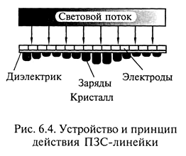 ПЗС представляет собой полупроводниковый кристалл (как правило, кремний), на поверхность которого нанесена прозрачная оксидная пленка, выполняющая функцию диэлектрика в микроскопических конденсаторах. Одной из обкладок такого конденсатора является поверхность самого кристалла, а другой — нанесенные на диэлектрик металлизированные электроды толщиной не более 0,6 мкм.
К электродам в определенной последовательности подается низкое напряжение (5-10 В). Это приводит к тому, что под элек тродами образуются так называемые потенциальные ямы в виде скоплений электронов. Под воздействием света в результате внутреннего фотоэффекта появляются свободные электроны. Количество электронов, скапливающихся под чувствительной площадкой каждого электрода, пропорционально интенсивности светового потока, падающего на чувствительную площадку данного электрода. Электроны образуют зарядовый пакет. Если ПЗС выполнен в виде линейки, зарядовые пакеты передаются из одной потенциальной ямы в соседнюю, достигая последней ячейки, откуда поступают на предварительный усилитель. ПЗС-линейка может содержать до нескольких тысяч фоточувствительных ячеек. Размер элементарной ячейки ПЗС определяет разрешающую способность сканера. Область спектральной чувствительности ПЗС расположена в видимой части спектра, причем наибольшая чувствительность наблюдается ближе к красной области.
Для просмотра фильма "Как это сделано: CCD-матрица (Discovery Chanel)" нажмите кнопку ВОСПРОИЗВЕДЕНИЕ.
В зависимости от способа перемещения фоточувствительного элемента сканера и носителя изображения относительно друг друга сканеры подразделяются на две основных группы — настольные (Desktop) и ручные (Hand-Held).
К числу настольных сканеров относятся планшетные (Flatbed), роликовые (Sheet-feed), барабанные (Drum) и проекционные (Overhead/Camera) сканеры.
Планшетные сканеры, или сканеры плоскостного типа, используются для ввода графики и текста с носителей формата А4 или АЗ. 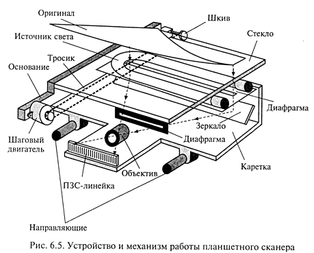
На рис. 6.5 показано устройство и механизм работы планшетного сканера. В планшетных сканерах оригинал располагается на его рабочей поверхности неподвижно. Освещение оригинала производится стабилизированным по интенсивности источником, в качестве которого используют лампы с холодным катодом или флуоресцентные лампы. В качестве фотоприемника обычно используются ПЗС-линейки. Лампа, ПЗС и оптическая система, направляющая на ПЗС световой поток, отраженный от оригинала, находятся на одной каретке и с помощью шагового механизма перемещаются вдоль оригинала. В основном все планшетные сканеры рассчитаны на получение копии с одного оригинала, однако к некоторым моделям сканеров прилагаются дополнительные приспособления для последовательной подачи и сканирования нескольких оригиналов.
При использовании в качестве оригиналов книг или сброшюрованных документов имеется возможность обеспечить их прижим к стеклянной поверхности сканера специальной крышкой на петлях.
К преимуществам планшетных сканеров следует отнести простоту использования, возможность сканирования как плоских оригиналов в широком диапазоне размеров, так и небольших трехмерных объектов. При необходимости сканирования оригиналов нестандартного большого формата имеется возможность сканирования по частям с последующим объединением с помощью какого-либо графического редактора.
Недостатками этого типа сканеров являются большая занимаемая площадь, сложность выравнивания оригинала с неровно размещенным на носителе изображением, невозможность сканирования прозрачных оригиналов.
Однако при этом планшетные сканеры — наиболее популярные устройства ввода текстовой и графической информации. Они обеспечивают необходимое качество изображений, используемых как в деловой корреспонденции, так и в высокохудожественных изданиях.
Роликовые сканеры осуществляют сканирование оригинала при его перемещении по специальным направляющим посредством роликового механизма подачи бумаги относительно неподвижных осветителя и ПЗС-линейки. Механизм работы роликового сканера показан на рис. 6.6.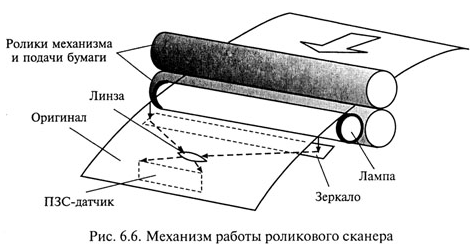 Сканирование в роликовом сканере, как и в планшетном, производится в отраженном свете. Этот принцип заложен в конструкции многих факсимильных аппаратов. Сканеры, работающие в двух режимах — сканирования изображения и его факсимильной передачи, называют факс-сканерами (Fax Scanner).
В отдельных моделях роликовых сканеров имеется устройство для подачи листов, которое позволяет сканировать в автоматическом режиме.
Большинство роликовых сканеров офисного применения предназначены для работы с оригиналами формата А4. Однако существуют широкоформатные роликовые сканеры, обеспечивающие сканирование оригиналов форматов А1 и А0.
Преимущества роликовых сканеров определяются их компактностью, удобством подключения и пользования, автоматической подачей листов оригинала, удовлетворительной скоростью сканирования и низкой стоимостью. В то же время эти сканеры имеют рад недостатков, связанных с невозможностью без специальных приспособлений осуществлять сканирование сброшюрованных документов, книг, а также с опасностью повреждения оригинала.
Для просмотра фильма "Как это работает: FAX сканер (Discovery Chanel)" нажмите кнопку ВОСПРОИЗВЕДЕНИЕ.
Барабанные сканеры позволяют получать изображения прозрачных или отражающих оригиналов с высокой степенью детализации. Механизм работы барабанного сканера представлен на рис. 6.7. 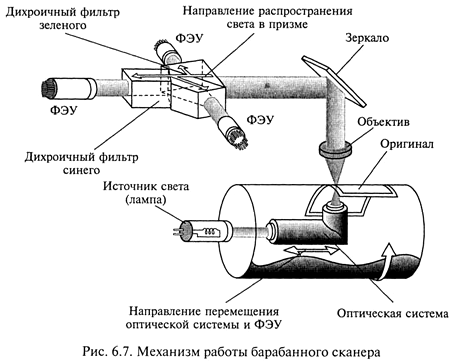
Прозрачный оригинал в барабанных сканерах закрепляется с помощью специальной ленты или масла на поверхности прозрачного цилиндра из органического стекла (барабана), который для обеспечения устойчивости укреплен на массивном основании. При вращении барабана с большой скоростью (от 300 до 1350 об/мин) фотоприемник считывает изображение с высокой точностью. В большинстве барабанных сканеров в качестве фотоприемника используется ФЭУ, который перемещается с помощью винтовой пары вдоль барабана. Для освещения оригинала применяется мощный стабилизированный по интенсивности излучения ксеноновый или галогенный источник света. При сканировании отражающих оригиналов применяется источник света, расположенный вне барабана рядом с приемником излучения.
За счет высокой скорости вращения барабана имеется возможность фокусировать на оригинале достаточно мощный поток света без риска повреждения оригинала. В связи с этим отличительной особенностью барабанных сканеров является возможность сканировать с высоким разрешением оригиналы, имеющие высокую оптическую плотность (печатные издания, художественные работы, слайды, диапозитивы, негативные пленки), как в отраженном, так и в проходящем свете.
В отдельных моделях барабанных сканеров в качестве фотоприемника изображения используется набор ПЗС-линеек, неподвижно установленных на всю ширину барабана и построчно сканирующих оригинал в отраженном свете. В этих сканерах, как правило широкоформатных, барабан совершает только один оборот за все время сканирования. Сканеры, в которых реализована эта технология, выгодно отличаются от сканеров с ФЭУ, поскольку исключается необходимость решать проблему стабилизации конструктивных элементов, обусловленную высокой скоростью вращения барабана. Для гашения возникающих при этом вибраций при¬меняются специальные амортизаторы, увеличивающие массу сканера до 250 кг и более.
Барабанные сканеры позволяют сканировать прозрачные или отражающие оригиналы типа высокохудожественных работ в полиграфии и картографии. При этом автоматическая корректировка освещенности, настройка фокусного расстояния и высокая производительность достигаются за счет обработки изображения встроенным компьютером.
Значительные габариты, необходимость предварительной под¬готовки обслуживающего персонала и высокая стоимость барабанных сканеров обусловливают ограничение их области применения профессиональной полиграфией и картографией.
Проекционные сканеры работают по принципу фотографической камеры и конструктивно напоминают фотоувеличитель. Механизм работы проекционного сканера показан на рис. 6.8. Оригинал располагается на подставке под сканирующей головкой изображением вверх. Сканирующая головка, содержащая ПЗС-датчик и перемещающий его в фокальной плоскости линзы двигатель, закрепляется на вертикальном штативе и может перемещаться по стойке или по вертикальным направляющим. Перед началом сканирования камеру устанавливают в положение, соответствующее требуемому разрешению и размеру изображения. Точная настройка (фокусировка), определяющая разрешение сканирования, осуществляется специальной редуцирующей линзой. Обычно в проекционных сканерах внутренний источник освещения не используется. Освещение оригинала производится за счет естественного комнатного света. В некоторых моделях проекционных сканеров свет через линзу освещает оригинал, а отраженный свет фиксируется ПЗС-матрицей. Такая конструкция сканера позволяет избежать влияния внешних засветок и получить высокое качество сканированных изображений. 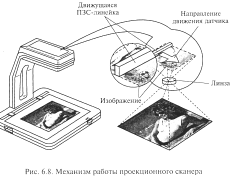
Особенностью проекционных сканеров является возможность сканирования трехмерных объектов. При этом конструкция сканеров обеспечивает переменное разрешение сканирования: небольшие объекты можно сканировать с высоким разрешением; большие нестандартные объекты, изображения которых нельзя ввести с помощью других сканеров, также могут быть сканированы, хотя и с низким разрешением. Простота конструкции и удобство применения, невысокая стоимость и возможность комбинирования при сканировании плоских и небольших трехмерных объектов обусловливают достаточно широкое применение проекционных сканеров как средств ввода информации.
Ручные сканеры применяются для сканирования малоформатных оригиналов или фрагментов большого изображения. Перемещение окна сканирования относительно оригинала производится за счет мускульной силы человека. Устройство ручного сканера показано на рис. 6.9. В небольшом корпусе шириной обычно чуть более 10 см размещаются лишь датчик, линза и источник света. Ширина области сканирования в зависимости от модели устройства варьируется от 60 до 280 мм. Длина области сканирования ограничена лишь объемом доступной оперативной памяти компьютера. Устанавливаемая в компьютере карта интерфейса преобразует поступающую информацию в цифровую форму и передает ее для последующей обработки специальной программе. Принципы работы ручного и роликового сканеров во многом похожи. 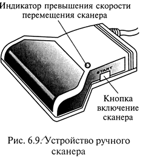
Отличительной особенностью ручного сканера является то, что он использует источник питания компьютера, к которому подключен. Как правило, ручные сканеры подключаются к параллельному порту компьютера без каких-либо адаптеров. Низкая цена ручных сканеров обусловлена простотой их конструкции.
В некоторых моделях ручных сканеров предусматривается возможность сканирования больших изображений за несколько проходов, т. е. путем последовательного просмотра отдельных его областей. Объединение областей сканирования производится с помощью специального программного обеспечения, позволяющего упростить эту процедуру.
Применение ручных сканеров как устройств ввода изображений объясняется их компактностью и дешевизной, хотя для профессиональной работы они обычно не используются. Однако применение ручных сканеров для сканирования текста не всегда оправдано, поскольку разработанные специально для ручных сканеров программы допускают довольно много ошибок при распознавании по сравнению со своими аналогами, созданными для других сканеров.
Многофункциональные сканеры — это комбинированные устройства, сочетающие в себе возможности сканеров различных типов, а также других технических средств информатизации, служащих для решения таких задач, как оптическое распознавание символов, архивирование, электронная почта и факсимильная связь. 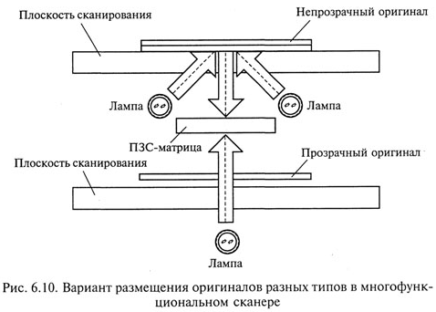
В комбинированных устройствах all-in-onee в одном корпусе обычно объединены роликовый сканер, лазерный или струйный принтер, факс-модем. Эти устройства можно использовать в качестве факсимильного аппарата, принтера, сканера, копировального аппарата и внешнего модема для доступа к сети по линиям телефонной связи. Такое интегрирование является оптимальным решением для SOHO (Small Office/Home Office - небольшой офис/домашний офис), поскольку позволяет освободить площадь и сэкономить на приобретении компонентов в комплексе, которые по отдельности стоят дороже. Основные недостатки таких ком¬бинированных систем — невысокое качество и сравнительно высокая стоимость копирования страницы.
В некоторых моделях планшетных сканеров фирмы Agfa реализована технология Twin Plate — новый способ размещения прозрачных и непрозрачных оригиналов в одном устройстве. Прозрачные и отражающие оригиналы располагаются в разных плоскостях, как показано на рис. 6.10, освещаются разными источниками, но регистрация производится одним и тем же приемником изображения.
Современные сканеры в основном предназначены для сканирования цветных оригиналов, но имеют режимы сканирования чернобелых и полутоновых изображений.
Задача цветного сканера сводится к различению основных цветов: красного (Red), зеленого (Green) и синего (Blue) — RGB. Для этого применяются различные технологии.
Например, в цветном сканере с одним источником света сканирование оригинала может осуществляться в три прохода с последовательным применением различных фильтров: красного (R), зеленого (G), синего (В), поочередно размещаемых между источником света и оригиналом. Сканируемое изображение освещается белым светом не непосредственно, а через вращающийся RGB-светофильтр. Для каждого из основных цветов последовательность операций практически не отличается от последовательности операций при сканировании полутонового изображения. Существенными недостатками данного метода являются увеличение времени сканирования в три раза и необходимость точного совмещения цветовых слоев, чтобы не допустить размывания отдельных деталей изображения.
В сканерах другого типа используются три источника света: красный, зеленый, синий, действующие поочередно для кратковременного освещения оригинала. Сканирование при этом производится однократно, что позволяет избежать не совмещения цветов, но требует подбора источников света со стабильными характеристиками.
В некоторых конструктивных решениях цветных сканеров используется один источник света, но сканирование цветных оригиналов осуществляется за один проход благодаря тому, что фотоприемник выполнен в виде фототранзисторов, размещенных в три линейки, а три цветных фильтра расположены перед ними так, что каждая линейка фототранзисторов освещается только своим цветом.
Однако наибольшее распространение получили цветные сканеры, оборудованные системой, состоящей из трех независимых фотодатчиков для каждого цвета. Оригинал освещается белым светом, а отраженный оригиналом свет попадает на фотоприемники через систему специальных фильтров, которые и разделяют белый свет на три составляющие. Принцип работы таких фильтров основан на использовании явления дихроизма, заключающегося в изменении окраски кристаллов в проходящем белом свете в зависимости от положения их оптической оси. После прохождения системы фильтров разделенные красный, зеленый и синий свет попадают каждый на свой фотоприемник, например ФЭУ. Путем последовательно выполняемых операций считывания тонового распределения по основным цветам получают информацию, необходимую для воспроизведения цветов изображения.
Для просмотра фильма "Как это работает: планшетный сканер (Discovery Chanel)" нажмите кнопку ВОСПРОИЗВЕДЕНИЕ.
Сканеры с интерфейсом SCSI требуют установки в компьютер дополнительной платы SCSI-адаптера, которая поставляется в комплекте со сканером. Преимуществом интерфейса SCSI является обеспечение высокой скорости сканирования.
К компьютерам, оснащенным USB-портом, лучше подключать сканер с USB-интерфейсом. Скорость при этом несколько уступает интерфейсу SCSI, однако простота подключения сканера искупает этот недостаток.
Сканеры с интерфейсом параллельного порта подключаются к уже имеющемуся параллельному порту. Пропускная способность параллельного порта значительно меньше по сравнению с интерфейсом SCSI. Однако при этом нет необходимости устанавливать дополнительную плату.
В комплект поставки сканера входит специальная программа — драйвер, предназначенная для управления процедурой сканирования и настройки основных параметров сканера. Ведущие производители аппаратных и программных средств — компании Aldus, Caere, Eastman Kodak, Hewlett-Pasckard и Logitech — объединили свои усилия для создания собственного формата драйвера TWAIN. Стандарт TWAIN определяет порядок обмена данными между прикладной программой и драйвером сканера, что позволило решить проблему совместимости различных компьютерных платформ, сканеров разных моделей и форматов представления данных. С помощью TWAIN-совместимого сканера можно сканировать изображения из любой программы, например Photoshop, CorelDRAW, PageMaker, PhotoStyler и др.
Ниже описаны основные характеристики, которые следует принимать во внимание при выборе типа и модели сканера.
Разрешающая способность определяется плотностью расположения распознаваемых точек и выражается в точках на дюйм (dpi-dot per inch). Сканеры имеют два параметра разрешающей способности: оптическое разрешение и программное. Оптическое разрешение — показатель первичного сканирования. Программными методами можно в дальнейшем повысить разрешение. Например, оптическое разрешение сканера может быть 300x600 dpi1, а программное — до 4800 х 4800 dpi. Оптическое разрешение имеет более важное значение для пользователя.
Оптическое разрешение зависит от размера элемента ПЗС-датчика и характеризует плотность, с которой производится выборка информации в заданной области оригинала.
Разрешение сканера имеет два показателя: по горизонтали и вертикали. Например, 600х300; 600х600; 800х800. Однако чаще всего употребляют первое значение: 600, 800 dpi
Область сканирования — максимальный размер оригинала для данного сканера.
Метод сканирования определяет одно- или трехпроходный способ считывания информации в цветных сканерах.
Скорость сканирования — количество страниц черно-белого оригинала, сканируемых в минуту с максимальным оптическим разрешением сканера.
Разрядность сканера измеряется в бит и определяет то количество информации, которое необходимо для оцифровки каждой точки изображения, а также количество цветов, которое способен распознать сканер. 24 бит соответствуют 16,7 миллионам цветов, а 30 бит - миллиарду. Несмотря на то что человеческий глаз уже не в состоянии отличить 16-битный цвет от 24-битного, в новейших моделях сканеров заявлена 48-битная разрядность.
Совокупность характеристик модели сканера определяет его принадлежность к одному из трех классов, на которые условно можно подразделить все модели сканеров.
Сканеры простых моделей используются для подготовки деловой документации, создания прайс-листов и рекламных объявлений, а также для подготовки электронных публикаций (Web-страниц, графических баз данных). Обычно такие сканеры обеспечивают оптическое разрешение в диапазоне 300-600 dpi, передачу 256 оттенков серого цвета для полутоновых изображений.
Сканеры промежуточного класса планшетного типа обладают оптическим разрешением 600-1800 dpi, высоким динамическим диапазоном, имеют возможность работы с прозрачными оригиналами и применяются в издательской деятельности.
Сканеры высокого класса обеспечивают разрешение свыше 4000 dpi, используются при необходимости оцифровки большого объема информации с высоким качеством и производительностью.
Лидером на российском рынке сканеров является Hewlett-Pacckard, однако недорогие модели Mustek, KYE также пользуются спросом. Для профессионального применения используют сканеры UMAX или Agfa.
Для просмотра фильма "Как это работает: сканер штрих-кода (Discovery Chanel)" нажмите кнопку ВОСПРОИЗВЕДЕНИЕ.
Цифровая камера - устройство для фотосъемки, в котором изображение регистрируется на систему ПЗС-матриц и сохраняется в цифровом виде.
Цифровая камера может не только фиксировать и преобразовывать в цифровую форму изображение, но и записывать звук, параметры съемки.
В зависимости от конструктивного исполнения различают следующие цифровые камеры: 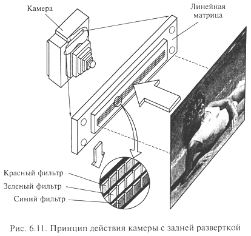
Принцип действия камеры с задней разверткой показан на рис. 6.11. Фотоприемник изображения в виде ПЗС-линейки перемещается в фокальной плоскости камеры вертикально, регистрируя изображение построчно. Камеры такого типа довольно инерционны, что не позволяет использовать их для регистрации движущихся объектов, однако они обладают высоким разрешением.
В трехкадровых камерах в качестве фотоприемника используется ПЗС-матрица. Для регистрации цветного изображения выполняют три экспозиции, регистрируя каждый раз изображение через отдельный светофильтр (красный, зеленый, синий). Такие камеры дают меньшее разрешение, чем камеры с задней разверткой, но экспозиция производится со скоростью, достаточной для использования вспышки.
В однокадровой камере с одной матрицей регистрация информации о цвете производится через нанесенный на поверхность ПЗС-матрицы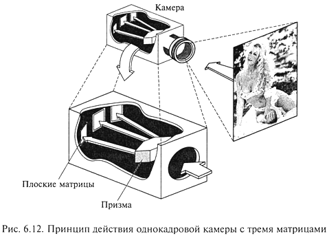 пленочный фильтр, состоящий из RGB-элементов. Для регистрации изображения производится всего одна экспозиция, что позволяет производить съемку движущихся объектов, однако цветопередача в таких камерах уступает по качеству многоэкспозиционной технологии.
Принцип действия однокадровой камеры с тремя матрицами, как показано на рис. 6.12, состоит в расщеплении с помощью специальной призмы изображения на красную, зеленую и синюю составляющие. Каждая монохромная составляющая изображения регистрируется своей ПЗС-матрицей. Цифровые камеры такого типа не обеспечивают высокого разрешения.
Носителем информации в цифровых камерах обычно служат карты флэш-памяти, данные из которой не исчезают при отключении питания, а могут быть стерты только специальным электрическим импульсом. Современные цифровые камеры в большинстве своем комплектуются картами флэш-памяти объемом от 8 до 128 Мбайт.
Новейшие модели цифровых камер позволяют сохранить изображение на CD-R объемом 650 или 700 Мбайт либо использовать миниатюрный диск IBM MicroDrive емкостью до 1 Гбайт.
Конструктивные решения некоторых моделей камер позволяют одновременно использовать многокадровую и однокадровую технологии экспонирования.
К числу важнейших характеристик цифровых камер можно отнести следующие:
Цифровые камеры удобны в использовании, поскольку имеют жидкокристаллический экран, позволяют вести запись как отдельных кадров, так и их последовательности, имеют возможность непосредственного подключения к принтеру.
По назначению цифровые камеры подразделяют на студийные, полевые и бытовые. Разрешение бытовых камер достаточно для просмотра на мониторе или экране телевизора, но не удовлетворительно для печати. Полевые и студийные камеры с высокой разрешающей способностью за счет использования ПЗС-матрицы большого размера дорогостоящие для широкого применения. Перспективным направлением совершенствования цифровых камер является использование вместо дорогостоящих ПЗС-матриц интегральных микросхем APS (Activ Pixel Sensor) на основе КМОП-технологии (КМОП — Complementary Metal Oxyde Semiconductor), невысокой стоимости, с высоким разрешением, более низким энергопотреблением. Они позволяют по-новому строить систему обработки изображения.
Высоким качеством отличаются цифровые камеры Olympus, Nicon, Sony. Недорогие модели производят Casio,Fuji и Minolta.
Для просмотра фильма "Как это работает: цифровой фотоаппарат (Discovery Chanel)" нажмите кнопку ВОСПРОИЗВЕДЕНИЕ.
Дигитайзер (Digitazer), или графический планшет, — устройство для оцифровки графических изображений, позволяющее преобразовывать в векторный формат изображение, полученное в результате движения руки оператора.
Дигитайзеры используются в системах автоматизированного проектирования (САПР) для ввода в компьютер графической информации в виде чертежей и рисунков: проектировщик водит пером-курсором по планшету, а изображение фиксируется в виде графического файла.
Дигитайзер состоит из двух элементов: основания (планшета) и устройства указания (пера или курсора), перемещаемого по поверхности основания, как показано на рис. 6.13.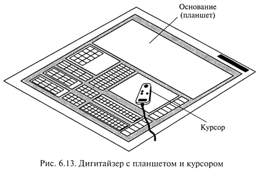 При нажатии на кнопку курсора его положение на поверхности планшета фиксируется и координаты передаются в компьютер.
Принцип действия дигитайзера основан на регистрации местоположения курсора с помощью встроенной в планшет сетки, состоящей из печатных проводников с шагом между соседними проводниками от 3 до 6 мм. Механизм регистрации обеспечивает получение высокого разрешения дигитайзера, определяемого шагом считывания информации, достигающим до 100 линий на миллиметр. Скорость обмена дигитайзера с компьютером зависит от оператора и достигает 100 — 200 точек в секунду.
Дигитайзеры подразделяются на электростатические и электромагнитные в зависимости от механизма определения местоположения устройства указания.
В электростатических дигитайзерах регистрируется локальное изменение электростатического потенциала сетки под курсором.
В электромагнитных дигитайзерах курсор является источником излучения электромагнитного сигнала, воспринимаемого сеткой, что делает дигитайзеры этого типа чувствительными к помехам, создаваемым внешними источниками, например мониторами.
Графические планшеты дигитайзеров выполняются на твердой (планшетные дигитайзеры) и гибкой основах (гибкие дигитайзеры). Дигитайзеры на гибкой основе имеют меньший вес, более компактны, удобны при транспортировке и более дешевые.
Размеры рабочего поля планшетов от (6 х 80)"до (44 х 62)". Погрешность в определении координат устройства регистрации 0,1—0,7 мм, причем в среднем погрешность электромагнитных дигитайзеров меньше, чем электростатических.
Устройства указания в дигитайзерах выполняются в виде курсора или пера.
Перо представляет собой указку, снабженную одной, двумя или тремя кнопками. Существуют перья, определяющие усилие, с которым наконечник пера прижимается к планшету, и имеющие 256 градаций степени нажима. От степени нажима зависит толщина линии, цвет в палитре и его оттенок. Для реализации художественных возможностей необходимо программное обеспечение типа Adobe Photoshop, Aldus PhotoStyler, Autodesk Animator Pro, CorelDRAW и др.
Курсоры применяются в основном проектировщиками в САПР. Они выполняются 4-, 8-, 12-, 16-клавишными. Обычно используются от двух до четырех клавишей, остальные программируются в программах-приложениях, например в Autocad. Одним из лучших считается 4-кнопочный курсор фирмы CalComp.
Признанным лидером по продажам дигитайзеров на российском рынке является фирма Wacom.